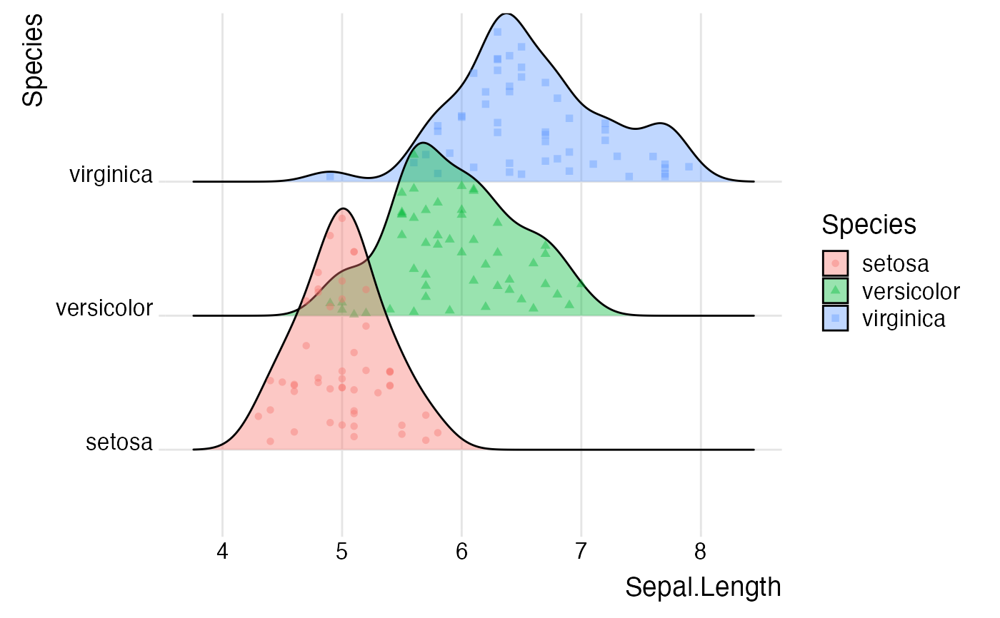
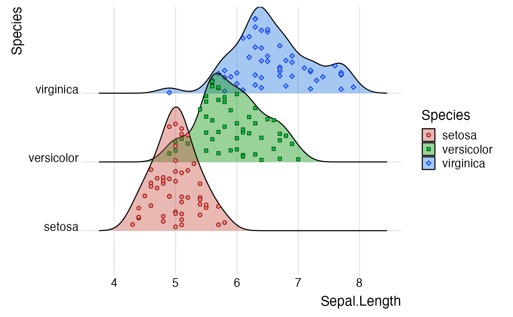

These are various scales that can be applied to point aesthetics, such as
point_color, point_fill, point_size. The individual scales all have the
same usage as existing standard ggplot2 scales, only the name differs.
See also
See scale_vline_color_hue() for specific scales for vline aesthetics
and ggplot2::scale_discrete_manual() for a general discrete scale.
Examples
library(ggplot2)
# default scales
ggplot(iris, aes(x=Sepal.Length, y=Species, fill = Species)) +
geom_density_ridges(
aes(
point_color = Species, point_fill = Species,
point_shape = Species
),
alpha = .4, jittered_points = TRUE
) +
theme_ridges()
#> Picking joint bandwidth of 0.181

# modified scales
ggplot(iris, aes(x=Sepal.Length, y=Species, fill = Species)) +
geom_density_ridges(
aes(
point_color = Species, point_fill = Species,
point_shape = Species
),
alpha = .4, point_alpha = 1,
jittered_points = TRUE
) +
scale_fill_hue(l = 50) +
scale_point_color_hue(l = 20) +
scale_point_fill_hue(l = 70) +
scale_discrete_manual("point_shape", values = c(21, 22, 23)) +
theme_ridges()
#> Picking joint bandwidth of 0.181
